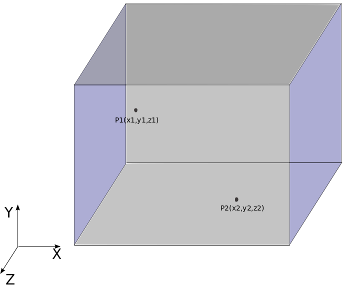
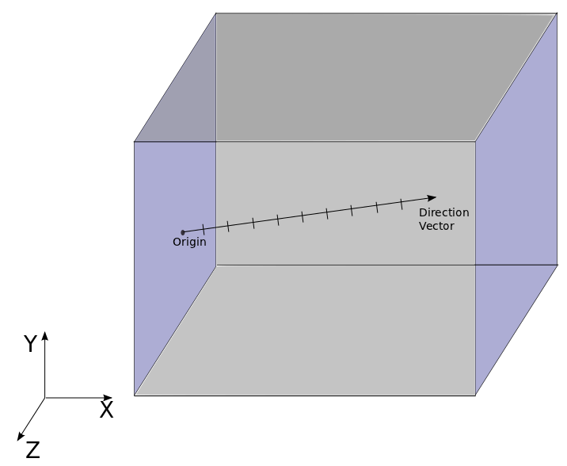
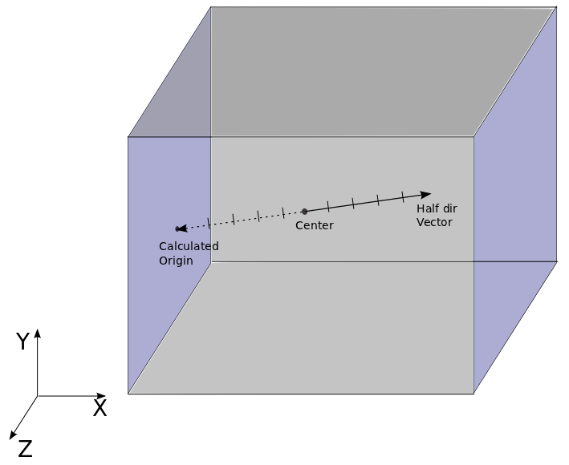
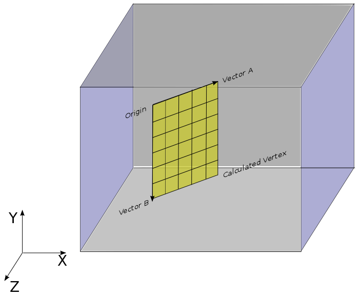
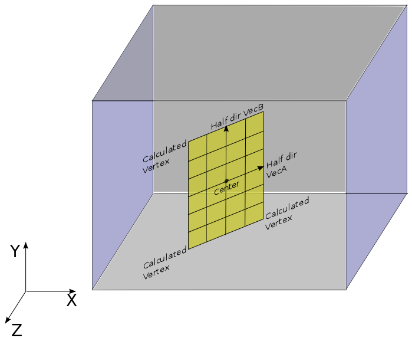

The shape is defined as a canonical object. The different shapes are basically derivatives of a simple cube. A cube with no length in any direction is a point, a cube with length along only one axis is a line whereas a cube with length along two axes is simply treated as plane by the underlying code.
The detailed examples for defining all shapes are discussed below.
A point is defined as the origin of the cube with no length vector. An example is shown below:
shape = {
kind = 'canoND',
object = {
origin = {0.7, -1.9, 2.2}
}
}
An illustrative diagram is shown in the image below: 
A line can be defined in two possible ways, by origin and vector or by definition the center and a vector.
We specify the origin coordinates (starting point) and direction vector of the tracking line in the following way:
shape = {
kind = 'canoND',
object = {
origin = {x, y, z},
vec = {x1, y1, z1},
segments = {n}
}
}
The length of the line is calculated by taking distance of direction vector from origin. A schematic diagram is shown below to provide intuition
origin---------> dir
There is also a possibility of defining the number of segments the contiguous line is segmented into. This is of importance in the tracking module. Spatial distribution of these segments on the line can also be defined which currently can be only equal. If the distribution is not defined then the default (equal) distribution is taken. The diagram below shows a line divided into five segments.
|----|----|----|----|----|
Typically, a line will be defined as:
shape = {
kind = 'canoND',
object = {
-- the origin of the line
origin = {0., 0., 0.},
-- the length and direction vector of the line
vec = {1., 0., 0.},
-- with how many points does the contiguous line have to be
-- segmented (default = 10)
segments = {10},
-- how are the discrete points distributed
-- (default is equal if not defined)
distribution = 'equal'
}
}
The figure below shows a graphical representation of the above definition of a line:

In this form of definition we can define the center coordinate of line and direction vector. The origin is thus calculated by reflecting the direction vector along center.
calculated origin<========= center --------->direction
Referring to the diagram above, lets assume that center was defined as
center = {0.,0.,0.} and direction = {1.,0.,0.}, then the origin will be
calculated as origin = {-1.,0.,0.}.
Thus, general definition of a line by center in lua format will be:
shape = {
kind = 'canoND',
object = {
center = {x, y, z},
vec = {x1, y1, z1},
segments = {n}
}
}
In the diagram below, this definition of a line is illustrated:

Further, there can be a requirement to define a single or multiple lines. This can simply be done by placing origin and vector of other line within the object list. A generic form is shown below:
shape = {
kind = 'canoND',
object = {
{
origin = {x1, y1, z1},
vec = {x', y', z'},
segments = {n1}
},
{
origin = {x2, y2, z2},
vec = {x'', y'', z''},
segments = {n2}
}
}
}
The various possible ways to define a plane are discussed below:
The plane is defined by two vectors and position in x,y,z coordinate with reference to origin. - origin - position to trasform plane from its origin - vecA - vector A from its origin ( defines plane length ) - vecB - vector B from its origin ( defines plane width )
origin-----------> vecA
| - |
| -A+B |
| - |
| - |
vecB v----------x
For example plane at xy-plane normal to z-axis, offset from z-plane
at 1.0, starting at x = -1.0 and y = -1.0 with length and width as 2.0
will be defined as
shape = {
kind = 'canoND',
object = {
origin = {-1.0, -1.0, 1.0},
vec= {
{2.0, 0.0, 0.0},
{0.0, 2.0, 0.0},
},
segments = { {5}, {5} },
bclabel = 'top',
refinementlevel = 5
}
}
In this example and the ones below, it should be noted that bclabel and refinement level are important to be defined for seeder whereas for the solver, they are not required to be defined.
Like a line, there is a possibility of defining the number of segments in 2 directions for a plane. The diagram below shows a plane divided into 5 segments in direction A and 4 segments in direction B thus resulting in 4 blocks inside.
|----|----|----|----|----|
|----|----|----|----|----|
|----|----|----|----|----|
|----|----|----|----|----|
Similarly, there is a possibility of defining distribution of these segments which at the current moment is only equal. A typical Lua configurations script to define a plane will look like below:
shape = {
kind = 'canoND',
object = {
origin = {-1.0, -1.0, 1.0},
vec = {
{2.0, 0.0, 0.0},
{0.0, 2.0, 0.0}
},
segments = { {5}, {10} },
distribution = 'equal'
}
}
The graphical image below shows a plane defined using the above form of definition. The plane is shown inside the bounding box with labels.

Plane is defined by a combination of 2 triangles. ...origin - common point for two triangles in a plane. ...pointA - which defines vecA or 2nd point of 1st triangle. ...pointB - which defined vecB or 2nd point of 2nd triangle.
origin---- pointA
| \ |
| -A+B |
| \ |
| \ |
pointB ----x
The same example above for the definition 1 is now defined using points instead of vectors:
plane={
{
pointA = {1.0, -1.0, 1.0},
pointB = {-1.0, 1.0, 1.0},
origin = {-1.0, -1.0, 1.0},
bclabel = 'top',
refinementlevel = 5
}
}
Taking a close look at this example reveals that whereas in first definition coordinates are calculated according to the length desired by vectors, in this case coordinates are provided and direction is automatically calculated by just joining these points.
In this definition, the center of plane is defined as Cartesian coordinates and vectors A and B are defined for 2 combining triangles. ...center - center of the plane. ...vecA/pointA - which defines vecA or 2nd point of 1st triangle. ...vecB/pointB - which defined vecB or 2nd point of 2nd triangle.
_______vecB___
| | |
| | |
| |______|vecA
| center |
| |
|______________|_
The Lua format for defining such a plane is:
shape = {
kind = 'canoND',
object = {
center = {0., 0., 0.},
vec = {
{1., 0., 0.},
{0., 2., 0.},
}
segments = { {5}, {5} },
bclabel = 'top',
refinementlevel = 5
}
}
In the image below, the above form of plane definition is graphically explained:

The various possible ways to define a box are discussed below:
The box is defined by three vectors and position in x,y,z coordinate with reference to origin. ...- origin - position to transform box from its origin ...- vecA - vector A from its origin ( defines box length ) ...- vecB - vector B from its origin ( defines box width ) ...- vecC - vector C from its origin ( defines box height )
As an example a box starting at x = -1.0, y = -1.0 and z = -2.0
with length, width and height as 2.0 will be defined as
shape = {
kind = 'canoND',
object = {
origin = {-1.0, -1.0, 1.0},
vec = {
{2.0, 0.0, 0.0},
{0.0, 2.0, 0.0},
{0.0, 0.0, 2.0}
}
segments = { {5}, {5}, {5} },
bclabel='top',
refinementlevel = 5
}
}
Like a plane, there is a possibility of defining the number of segments in 3 directions for a box. Similarly, there is a possibility of defining distribution of these segments which at the current moment is only equal.
Box can also be defined by specifying the center and origin is then calculated according to the length of half vectors
The Lua format for defining such a box is:
shape = {
kind = 'canoND',
object = {
center = {-1.0, -1.0, 1.0},
halfvec= {
{1.0, 0.0, 0.0},
{0.0, 1.0, 0.0},
{0.0, 0.0, 1.0}
}
segments = { {5}, {5}, {5} },
bclabel='top',
refinementlevel = 5
}
}
The above definition defines a box same as definition 1 but instead of full vectors, length of half vectors is given which is used in calculating the origin.